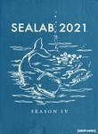
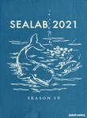

Sealab 2021


Stephen Klancher: April 7, 2002 
This was probably the only episode I actually watched as it aired. It was the first of the second season and I went over to Katrina's house to watch it with her.

Sealab 2021Stephen Klancher: April 7, 2002 This was probably the only episode I actually watched as it aired. It was the first of the second season and I went over to Katrina's house to watch it with her.  Watched an episode not known by IMDb? |